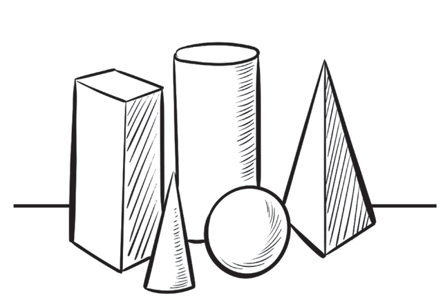

Mistari
Mistari hufafanua maumbo na kuonyesha mipaka. Mistari pia huonyesha uhalisia, uelekeo, umoja, umbali, na kina katika picha. Uwezo wa kutumia mistari kwa ustadi unaboresha muonekano wa picha. Katika Kielelezo namba 13 sura za maumbo hayo zimechorwa kwa kutumia mistari.

Mistari huelezea uelekeo wa picha kwa kuonesha kama picha ina mwelekeo wa wima, mlalo au mielekeo tofautitofauti. Mistari pia huweza kutumika kuonyesha vitu visivyoonekana, kama vile mwelekeo wa upepo. Vilevile, mistari hutumika kuonyesha umbali katika picha.
Picha zenye uelekeo wa wima
Mtazamaji anaweza kupata uelekeo wa mistari kutokana na jinsi ilivyoelekezwa. Kwa mfano katika Kielelezo namba 14, mistari iliyo katika miti inaonesha mwelekeo wa wima.